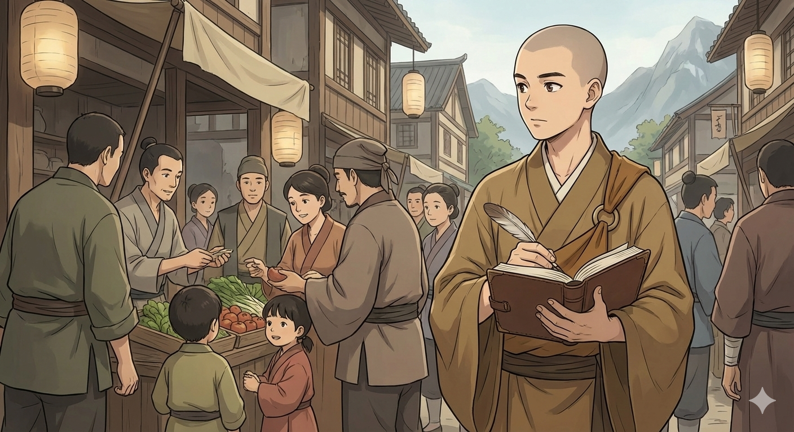

Front Matter
Narrator's Foreword

People say it takes a village to raise a child.
In Hirogawa, that meant a hundred small, quiet acts: a bowl refilled without asking, a grip corrected by a passing hand, a name spoken gently when no one else was listening. Love rarely announced itself there-it accumulated. And in that accumulation, without ever meaning to, the village bound Michio to a future he had not chosen.
Sometimes this meant doing chores for other villagers. Gratitude was the usual coin-quiet, sincere, and never demanded back. Yet each thank-you lingered, settling like a gentle claim. Michio wanted to belong to himself, at least as much as he belonged to the village-to everyone in it. It was a question he could not yet name, but one that would occupy his mind and heart for years to come.